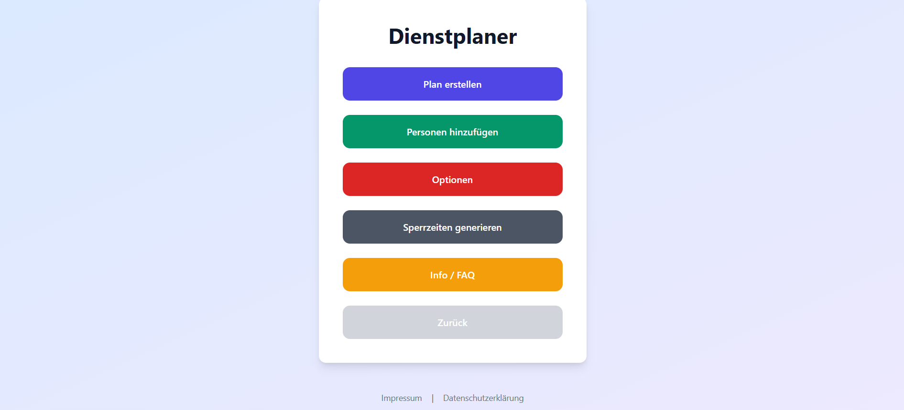
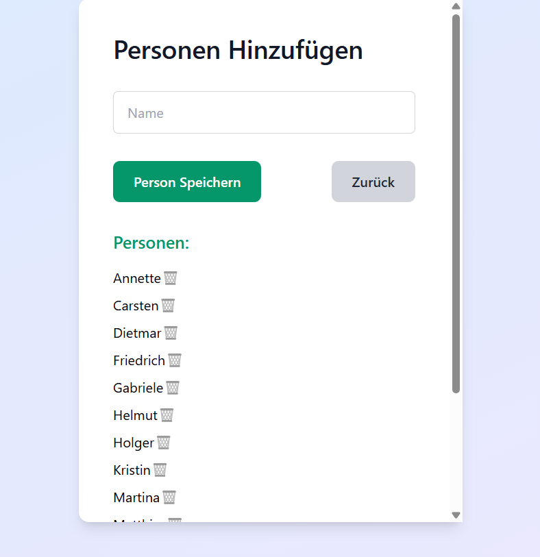
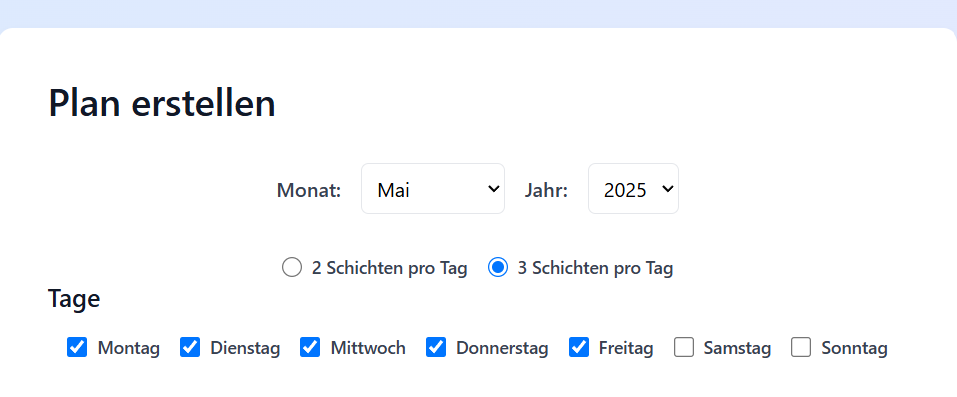
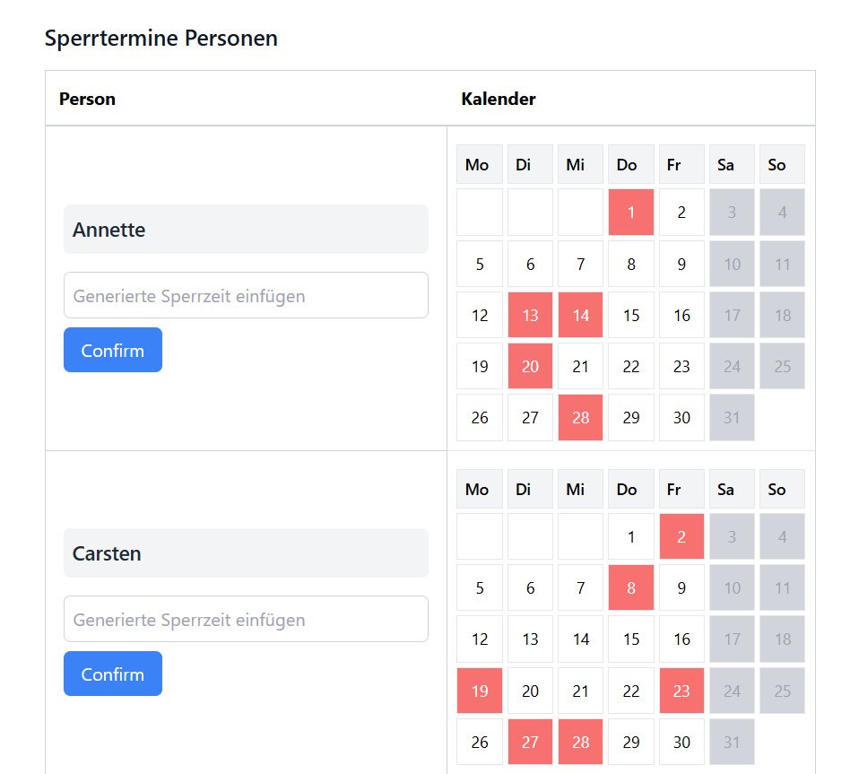
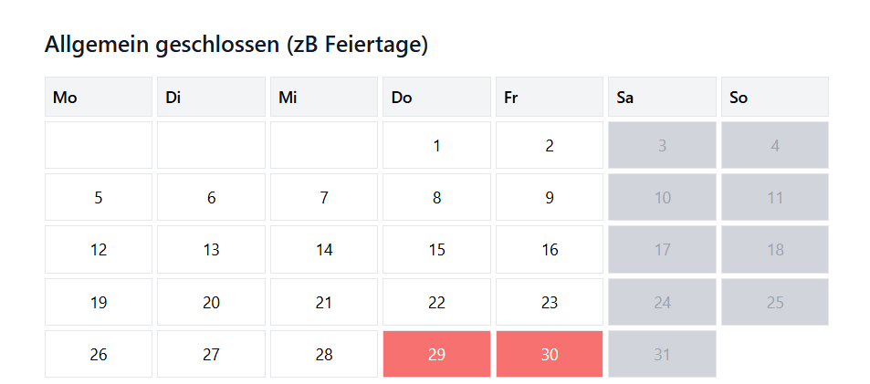
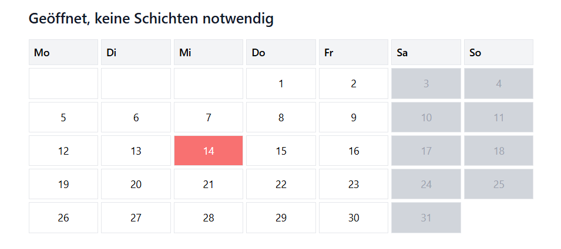
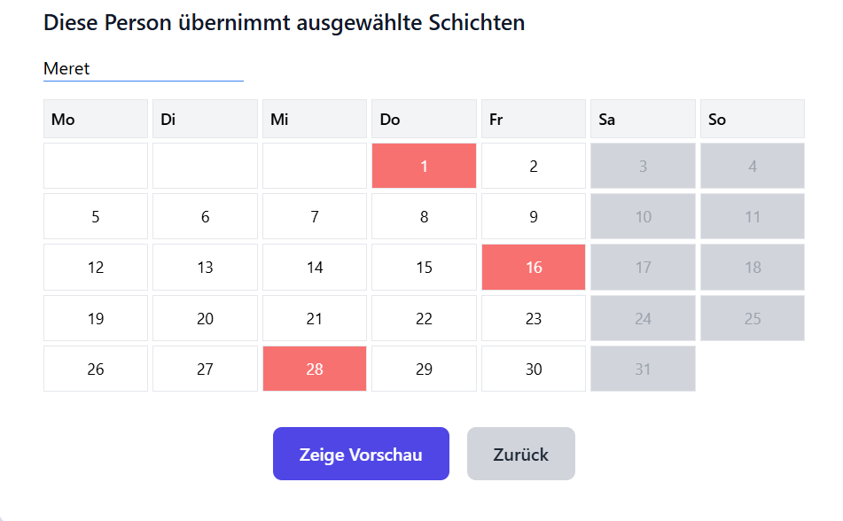
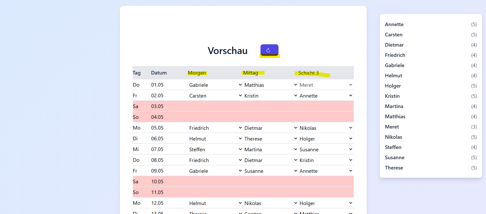
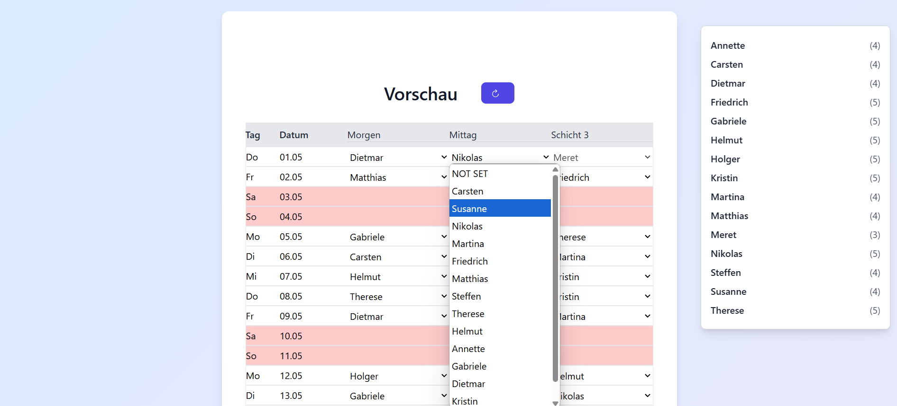
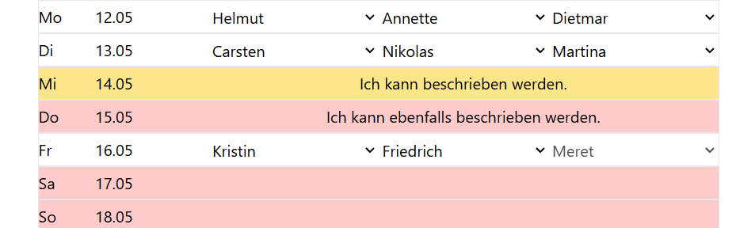

Quickstart
Learn more about the basic features of the various schedule planners using the Basic Schedule Planner.
1. Home Page
Each schedule planner has its own menu. From here, you can access all important features of the planner.
2. Add People
Under "Add People", enter all individuals who should be included in the schedule.
3a. Create Plan
Then navigate to "Create Plan". Here you select the month, mark service days, and choose the number of shifts per day.
3b. Define Blackout Dates
Specify for each person on which days they are NOT available.
3c. Holidays & Special Cases
Days that are completely closed are defined in the "Completely Closed" calendar. These days will later appear in red in the PDF.
Days that are open but do not require shifts can be set in the "Open, No Shifts Needed" calendar. These will appear in yellow.
3d. Special Shift Assignments
In the last calendar, you can assign specific shifts to specific people on certain days. In the example, Meret takes a shift on the 1st, 16th, and 28th.
This feature is only available for the Parent Duty Schedule Planner and the Basic Schedule Planner.
4a. Preview
Here you can see how the people have been distributed across the days. At the top, you can change the labels of the 2 or 3 shifts. These labels also appear in the PDF.
You can make manual changes or regenerate the plan with a single click.
4b. Distribution
On the right, it shows how many shifts each person has received. A click highlights the assigned shifts in green.

4c. Manual Adjustments
Click on a field to select a different person for that shift.
If the new person is unavailable on that day, a warning will appear. You can then cancel or save anyway.
4d. Add Extra Information
Click on fields marked red or yellow to add notes – e.g., "Company Outing". These notes also appear in the PDF.
5. Generate PDF
If everything looks good, click "Generate PDF". The PDF will be downloaded automatically. Done!